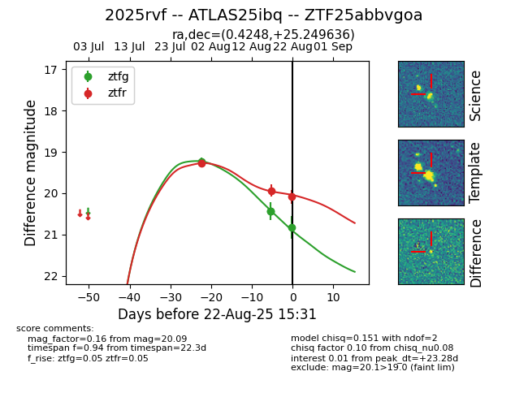

Target 2025rvf at 2025-08-22 15:31, see:
FINK: fink-portal.org/ZTF25abbvgoa
Lasair: lasair-ztf.lsst.ac.uk/objects/ZTF25abbvgoa
ALeRCE: alerce.online/object/ZTF25abbvgoa
TNS: wis-tns.org/object/2025rvf
YSE: ziggy.ucolick.org/yse/transient_detail/2025rvf
alt names
ZTF25abbvgoa (ztf,alerce)
2025rvf (tns,yse)
ATLAS25ibq (atlas)
coordinates:
equatorial (ra, dec) = (0.4248,+25.24964)
galactic (l, b) = (108.9536,-36.26837)
photometry
last ztfg=20.83, ztfr=20.09
4 ztfg, 3 ztfr detections
